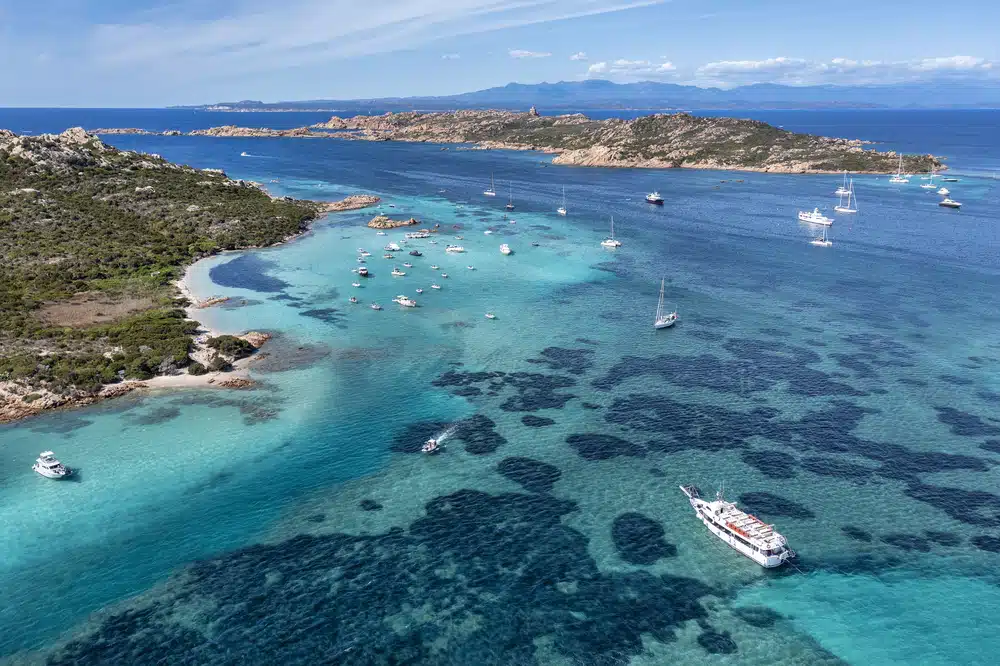

Riviera del Corallo
La Sardegna non offre solo bellezze naturali ma anche storia, cultura, attività di ogni tipo e prodotti artigianali di altissimo livello. Concentrandosi solo sulla parte settentrionale dell’isola, ti consiglio di visitare la Riviera del Corallo decisamente una delle 5 località più belle della Sardegna. Nei suoi fondali prospera il corallo rosso, prezioso materiale di gioielli unici e inestimabili. Godersi un tramonto passeggiando lungo le vie della catalana Alghero o dalla cima della necropoli di Santu Pedru è già un piccolo sogno dopo una giornata trascorsa a prendere il sole, a immergersi nelle acque turchesi del Golfo di Tramariglio e aver ricercato la frescura delle Grotte di Nettuno.
Golfo dell’Asinara
Se cerchi più un viaggio che inclusa anche escursioni e natura, ti consiglio di andare al Golfo dell’Asinara, zona molto bene attrezzata, dove potrai scegliere se immergerti nel profumo dei pini e degli eucalipti che prosperano a Porto Torres o esplorare il Parco Nazionale dell’Asinara, oppure lasciar affondare i piedi nella sabbia, fine e bianchissima, delle spiagge de la Pelosa. Ti consiglio anche di visitare la romanica San Gavino e se hai tempo anche i siti archeologici che si trovano nelle vicinanze risalenti ai tempi dell’antico Impero Romano. Vuoi fare qualche attività soportiva mentre ti trovi nel Golfo dell’Asinara? Trekking, birdwatching, golf, tennis, windsurf e equitazione, tutte attività che si possono fare in zona.

L’arcipelago La Maddalena e Punta Nord
Stesse attività e paesaggi spettacolari anche nel terzo e quarto luogo delle 5 località più belle della Sardegna . L’arcipelago La Maddalena e Punta Nord offrono parchi nazionali da visitare e accolgono, nelle loro acque limpide, tantissime varietà marine da scoprire. Alle escursioni naturali di Candeo, nell’isola di Caprera, va aggiunto anche il Museo Garibaldino, elemento capace di soddisfare curiosità storico-culturali del visitatore.
Golfo di Olbia o San Teodoro
Come quinto e ultimo posto (ma non per importanza) delle 5 località più belle della Sardegnada non può mancare il Golfo di Olbia o San Teodoro. Ma anche la carismatica Porto Cervo, in Costa Smeralda, favolosa sia per le attività all’aria aperta sia per quelle legate alla massima espressione dell’artigianato e dell’alta moda esclusivamente Made in Italy.